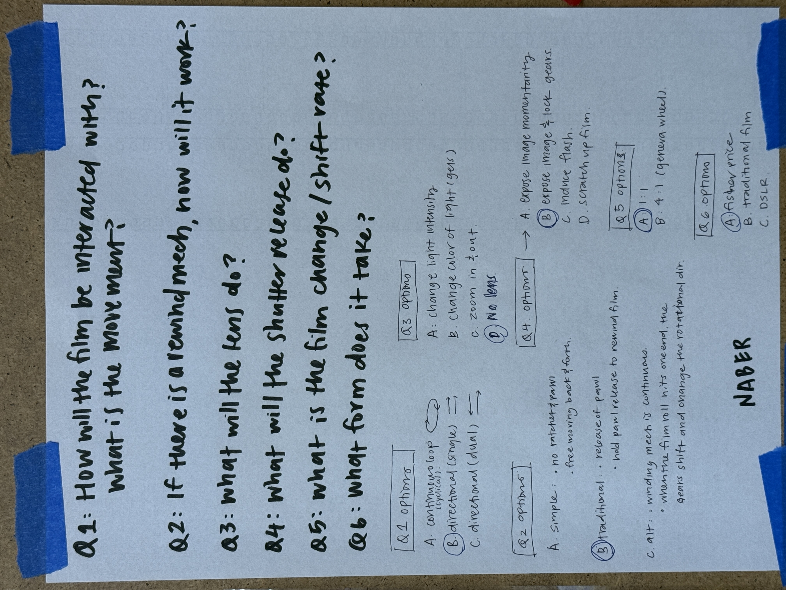
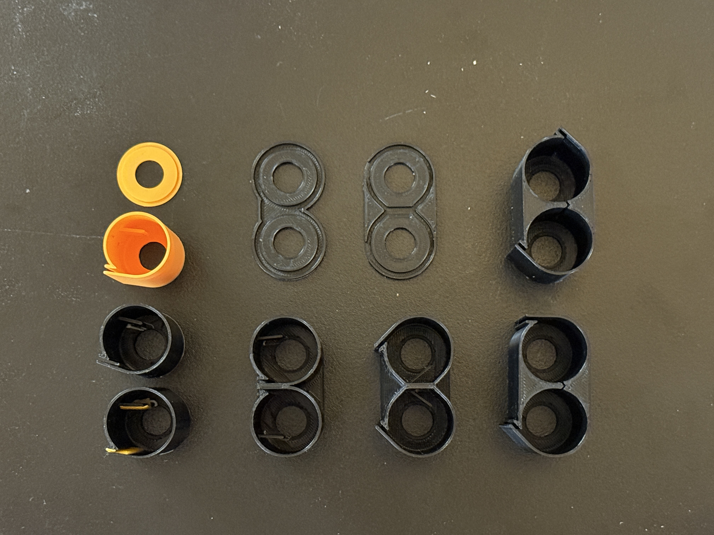
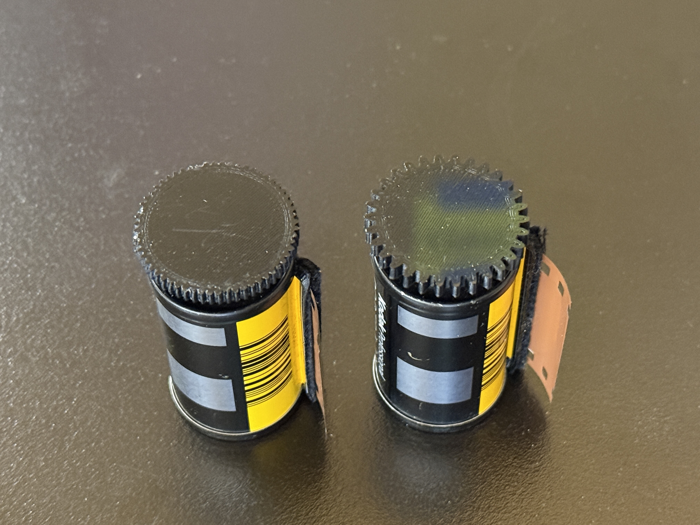
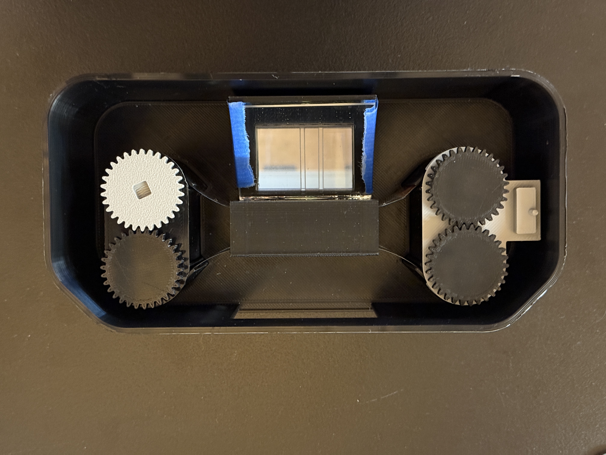
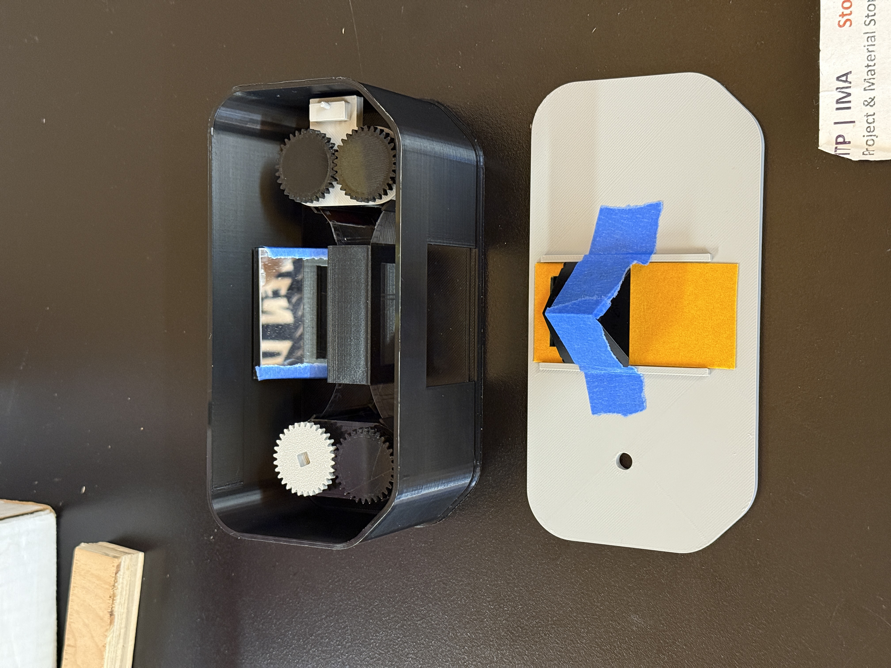
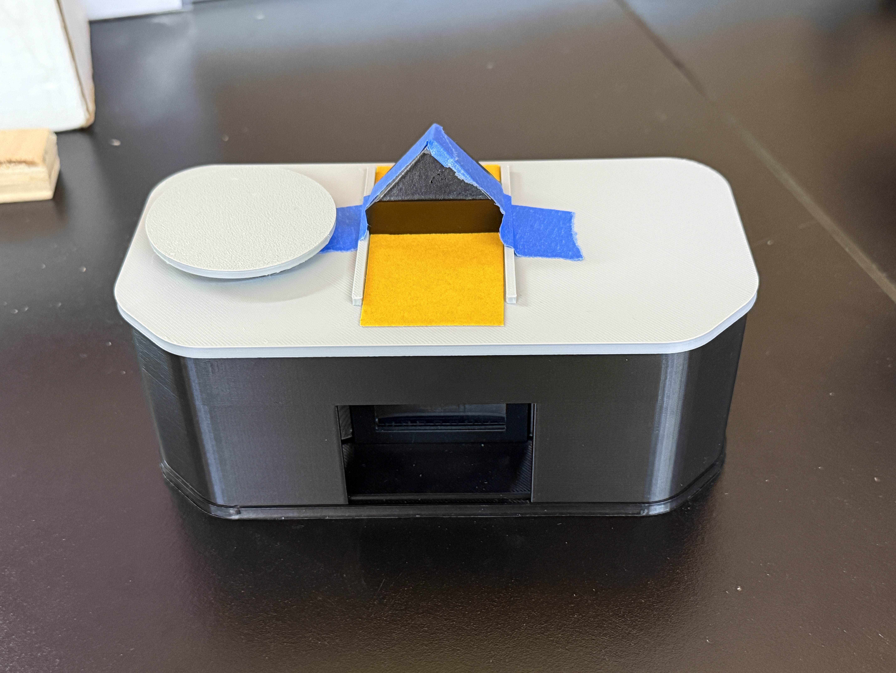
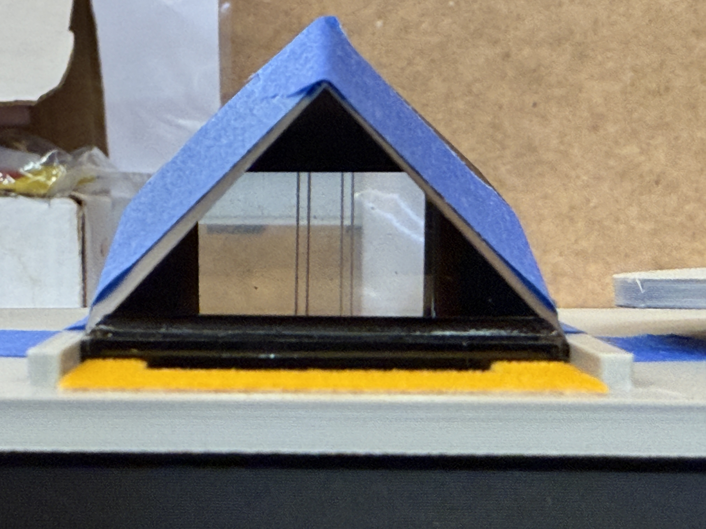
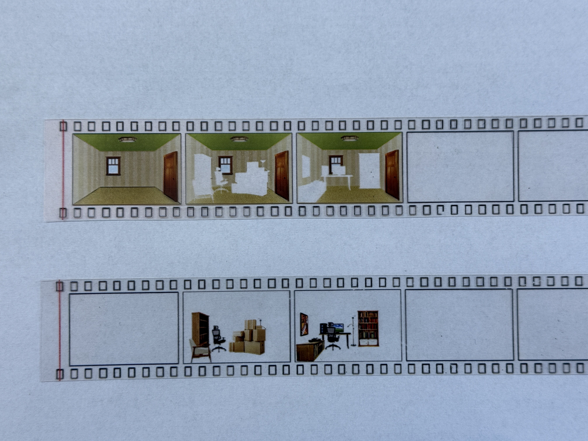
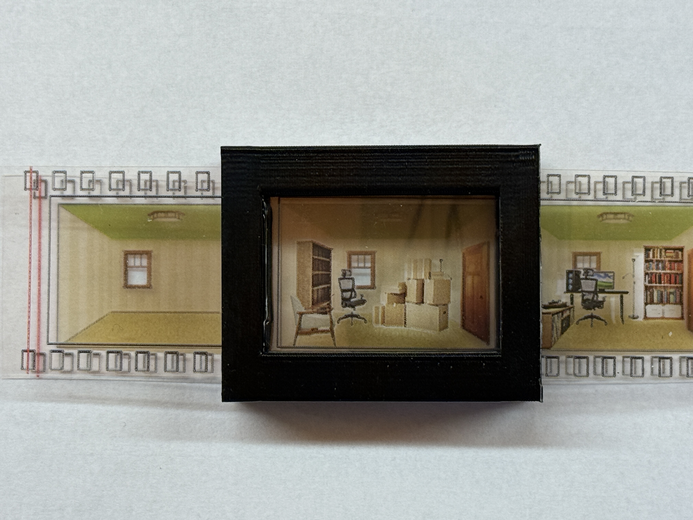
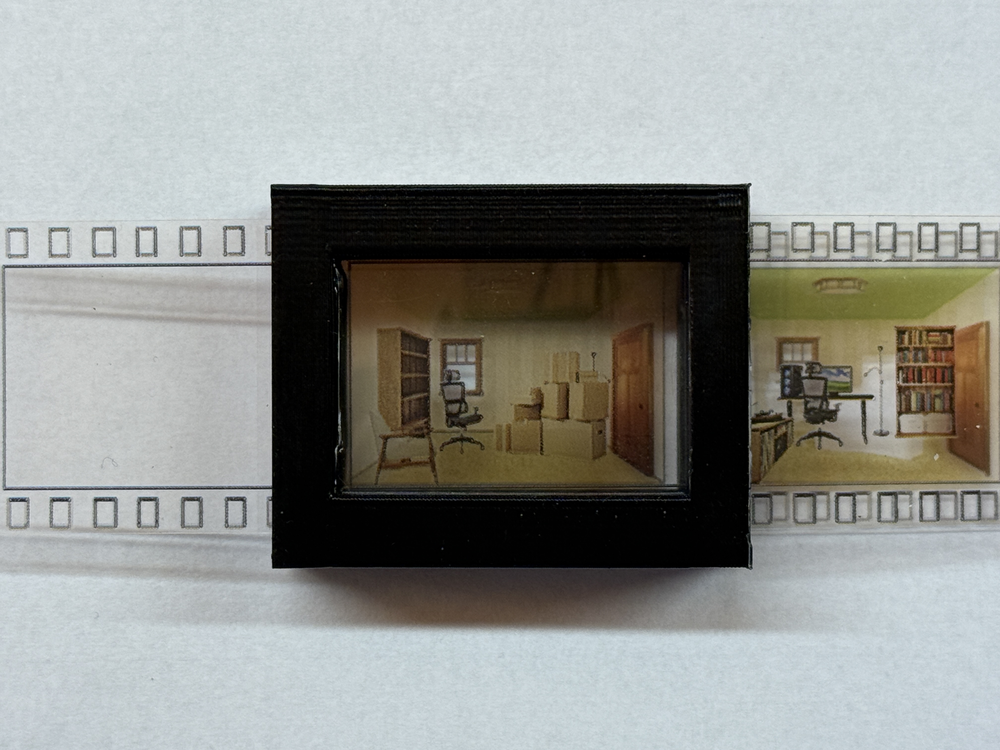

6 Questions

Q1: How will the film be interacted with? What is the movement?
- A. continuous loop (cyclical nature of time, end of one chapter is the beginning of another, etc...)
- B. single directional (both rolls of film advance in the same direction)
- C. dual directional (one roll of film advances forward, the other backward. The two rolls would be controlled independently)
This decision is made partially due it's simplicity in visual and interaction design (timeline management), but also like a film camera, time moves forward frame by frame. We cannot relive the past without intentionally recalling past memories. There is also something here to be said about a sense of control, which I still have not been able to fully articulate, yet.
Q2: If there is a rewind mechanism, how will it work?
- A. simple: freemoving back and forth, the observer can wind the film in either direction at any time
- B. traditional: the observer can only rewind the film if they unlock the ratchet and pawl connection
- C. alt: the observer's winding mechanism is continuous and constantly forward moving. Once the film runs out, a mechanism is triggered and a new set of gears set into place and reverse the winding direction.
Q3: What will the lens do?
- A. change light intensity (aperture)
- B. change color of light (gels)
- C. zoom in & out
- D. no lens
This was the last question to be answered. I ended up deciding to add the last option of "no lens" as it did not add to the experience or narrative in a meaningful way. Also drawing inspiration from the View Master and Fisher Price camera that I have - there is no functional lens mechanism. Relying on the environmental lighting conditions also contribute to the "passive" experience.
Q4: What will the shutter release do?
- A. expose image momentarily (timed mechanism)
- B. expose image & lock gears until released
- C. induce flash
- D. scratch up film (deteriorate the image as it gets used, a nod to memory degradation every attempt at recall)
This is one of the few interactions where the observer has the most agency over the experience, while not having complete control. By depressing the shutter release, the observer is able to "capture" a moment in time, but the gears are locked until they release it. I initially saw this as a metaphor for being present in the moment. By choosing to be present or pressing the button, the observer is not concerned for the future, and when they are advancing along the timeline, they are unable to witness the quick changes through the scenes, leaving the observer with the question of "did I miss anything?". Though after some brainstorming, I realized it can also be seen as holding onto a memory and not being able to move forward until we loosen our grip.
Q5: What is the film change and shift rate?
- A. 1:1
- B. 1:4
I really wanted the Geneva mechanism to work and explore the dynamic and intriguing movement it would create. But the timeline does not allow for this deep dive exploration this semester. Perhaps if this continues into thesis development, I will revisit this idea.
Q6: What form does it take?
- A. Fisher Price Camera style
- B. traditional film camera
- C. DSLR
- D. not a camera at all
There was a moment in the last few days where I began second guessing whether the form of this project should even take on any resemblance to a camera at all. I ended up deciding to lean into the explicit nostalgic quality of the Fisher Price Camera. While this object may not suggest universal nostalgia, the vibrant standard hues and dramatic large buttons may evoke memories of childhood toys for many. The contents of the film reels will also add to the nostalgic quality.
Fabrication Update
As of 2025-11-03, the following updates have been made to the fabrication process:
- redesign dual canisters and gears


- prototype chassis to hold the camera mechanism. While I do not love the form and will certainly
redesign it, it was important to create a housing to support all the internal components and begin
thinking about ergonomics & user behaviors.


- construct mirror and pentaprism layout & structure


- film test print



- Prototyped rewinding mechanism - unsuccessfully will need to work on this next week
Goals before playtest
playtest prep (11/4-11/10):
- fabricate rewinding mechanism
- fabricate shutter release mechanism
- fix film winding tension
- print a couple sets of film for visual testing outside of camera